/run/media/yh/새 볼륨/_국뽕영상결과물/제작규칙_V4/썸네일_V3/시범10_V3.1/01_a.jpg
/run/media/yh/새 볼륨/_국뽕영상결과물/제작규칙_V4/썸네일_V3/시범10_V3.1/01_b.jpg
/run/media/yh/새 볼륨/_국뽕영상결과물/제작규칙_V4/썸네일_V3/시범10_V3.1/01_c.jpg
/run/media/yh/새 볼륨/_국뽕영상결과물/제작규칙_V4/썸네일_V3/시범10_V3.1/02_a.jpg
/run/media/yh/새 볼륨/_국뽕영상결과물/제작규칙_V4/썸네일_V3/시범10_V3.1/02_b.jpg
/run/media/yh/새 볼륨/_국뽕영상결과물/제작규칙_V4/썸네일_V3/시범10_V3.1/02_c.jpg
/run/media/yh/새 볼륨/_국뽕영상결과물/제작규칙_V4/썸네일_V3/시범10_V3.1/03_a.jpg
/run/media/yh/새 볼륨/_국뽕영상결과물/제작규칙_V4/썸네일_V3/시범10_V3.1/03_b.jpg
/run/media/yh/새 볼륨/_국뽕영상결과물/제작규칙_V4/썸네일_V3/시범10_V3.1/03_c.jpg
/run/media/yh/새 볼륨/_국뽕영상결과물/제작규칙_V4/썸네일_V3/시범10_V3.1/04_a.jpg
/run/media/yh/새 볼륨/_국뽕영상결과물/제작규칙_V4/썸네일_V3/시범10_V3.1/04_b.jpg
/run/media/yh/새 볼륨/_국뽕영상결과물/제작규칙_V4/썸네일_V3/시범10_V3.1/04_c.jpg
/run/media/yh/새 볼륨/_국뽕영상결과물/제작규칙_V4/썸네일_V3/시범10_V3.1/05_a.jpg
/run/media/yh/새 볼륨/_국뽕영상결과물/제작규칙_V4/썸네일_V3/시범10_V3.1/05_b.jpg
/run/media/yh/새 볼륨/_국뽕영상결과물/제작규칙_V4/썸네일_V3/시범10_V3.1/05_c.jpg
/run/media/yh/새 볼륨/_국뽕영상결과물/제작규칙_V4/썸네일_V3/시범10_V3.1/06_a.jpg
/run/media/yh/새 볼륨/_국뽕영상결과물/제작규칙_V4/썸네일_V3/시범10_V3.1/06_b.jpg
/run/media/yh/새 볼륨/_국뽕영상결과물/제작규칙_V4/썸네일_V3/시범10_V3.1/06_c.jpg
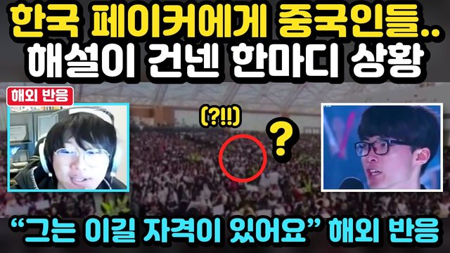
/run/media/yh/새 볼륨/_국뽕영상결과물/제작규칙_V4/썸네일_V3/시범10_V3.1/07_a.jpg
/run/media/yh/새 볼륨/_국뽕영상결과물/제작규칙_V4/썸네일_V3/시범10_V3.1/07_b.jpg
/run/media/yh/새 볼륨/_국뽕영상결과물/제작규칙_V4/썸네일_V3/시범10_V3.1/07_c.jpg
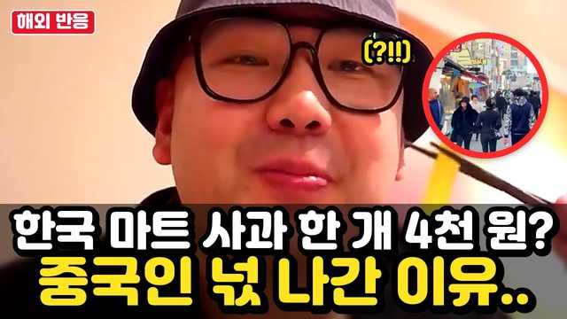
/run/media/yh/새 볼륨/_국뽕영상결과물/제작규칙_V4/썸네일_V3/시범10_V3.1/08_a.jpg
/run/media/yh/새 볼륨/_국뽕영상결과물/제작규칙_V4/썸네일_V3/시범10_V3.1/08_b.jpg
/run/media/yh/새 볼륨/_국뽕영상결과물/제작규칙_V4/썸네일_V3/시범10_V3.1/08_c.jpg
/run/media/yh/새 볼륨/_국뽕영상결과물/제작규칙_V4/썸네일_V3/시범10_V3.1/09_a.jpg
/run/media/yh/새 볼륨/_국뽕영상결과물/제작규칙_V4/썸네일_V3/시범10_V3.1/09_b.jpg
/run/media/yh/새 볼륨/_국뽕영상결과물/제작규칙_V4/썸네일_V3/시범10_V3.1/09_c.jpg
/run/media/yh/새 볼륨/_국뽕영상결과물/제작규칙_V4/썸네일_V3/시범10_V3.1/10_a.jpg
/run/media/yh/새 볼륨/_국뽕영상결과물/제작규칙_V4/썸네일_V3/시범10_V3.1/10_b.jpg
/run/media/yh/새 볼륨/_국뽕영상결과물/제작규칙_V4/썸네일_V3/시범10_V3.1/10_c.jpg
/run/media/yh/새 볼륨/_국뽕영상결과물/제작규칙_V4/썸네일_V3/시범10_V3.1/11_a.jpg
/run/media/yh/새 볼륨/_국뽕영상결과물/제작규칙_V4/썸네일_V3/시범10_V3.1/11_b.jpg
/run/media/yh/새 볼륨/_국뽕영상결과물/제작규칙_V4/썸네일_V3/시범10_V3.1/11_c.jpg
/run/media/yh/새 볼륨/_국뽕영상결과물/제작규칙_V4/썸네일_V3/시범10_V3.1/12_a.jpg
/run/media/yh/새 볼륨/_국뽕영상결과물/제작규칙_V4/썸네일_V3/시범10_V3.1/12_b.jpg
/run/media/yh/새 볼륨/_국뽕영상결과물/제작규칙_V4/썸네일_V3/시범10_V3.1/12_c.jpg
/run/media/yh/새 볼륨/_국뽕영상결과물/제작규칙_V4/썸네일_V3/시범10_V3.1/13_a.jpg
/run/media/yh/새 볼륨/_국뽕영상결과물/제작규칙_V4/썸네일_V3/시범10_V3.1/13_b.jpg
/run/media/yh/새 볼륨/_국뽕영상결과물/제작규칙_V4/썸네일_V3/시범10_V3.1/13_c.jpg
/run/media/yh/새 볼륨/_국뽕영상결과물/제작규칙_V4/썸네일_V3/시범10_V3.1/14_a.jpg
/run/media/yh/새 볼륨/_국뽕영상결과물/제작규칙_V4/썸네일_V3/시범10_V3.1/14_b.jpg
/run/media/yh/새 볼륨/_국뽕영상결과물/제작규칙_V4/썸네일_V3/시범10_V3.1/14_c.jpg
/run/media/yh/새 볼륨/_국뽕영상결과물/제작규칙_V4/썸네일_V3/시범10_V3.1/15_a.jpg
/run/media/yh/새 볼륨/_국뽕영상결과물/제작규칙_V4/썸네일_V3/시범10_V3.1/15_b.jpg
/run/media/yh/새 볼륨/_국뽕영상결과물/제작규칙_V4/썸네일_V3/시범10_V3.1/15_c.jpg
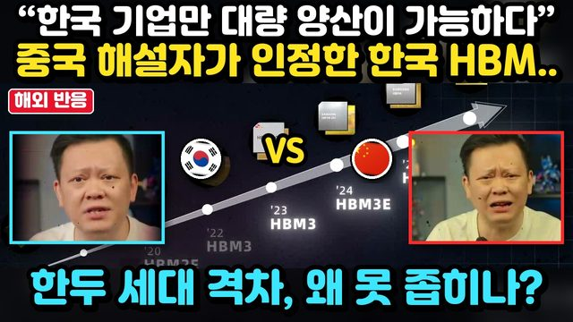
/run/media/yh/새 볼륨/_국뽕영상결과물/EP01_HBM메모리/썸네일_V3/썸네일_V3.1_a_수정본.jpg
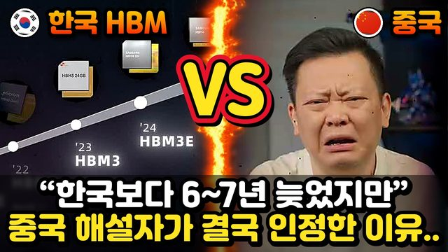
/run/media/yh/새 볼륨/_국뽕영상결과물/EP01_HBM메모리/썸네일_V3/썸네일_V3.1_b_VS분할.jpg
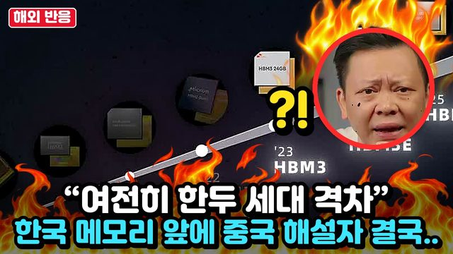
/run/media/yh/새 볼륨/_국뽕영상결과물/EP01_HBM메모리/썸네일_V3/썸네일_V3.1_c_불꽃.jpg
/run/media/yh/새 볼륨/_국뽕영상결과물/EP01_K2폴란드/썸네일_V3/썸네일_V3.1_a_수정본.jpg
/run/media/yh/새 볼륨/_국뽕영상결과물/EP01_K2폴란드/썸네일_V3/썸네일_V3.1_b_VS분할.jpg
/run/media/yh/새 볼륨/_국뽕영상결과물/EP01_K2폴란드/썸네일_V3/썸네일_V3.1_c_불꽃.jpg
/run/media/yh/새 볼륨/_국뽕영상결과물/EP01_KF21전투기/썸네일_V3/썸네일_V3.1_a_수정본.jpg
/run/media/yh/새 볼륨/_국뽕영상결과물/EP01_KF21전투기/썸네일_V3/썸네일_V3.1_b_VS분할.jpg
/run/media/yh/새 볼륨/_국뽕영상결과물/EP01_KF21전투기/썸네일_V3/썸네일_V3.1_c_불꽃.jpg
/run/media/yh/새 볼륨/_국뽕영상결과물/EP02_드라마작가칭찬/썸네일_V3/썸네일_V3.1_a_수정본.jpg
/run/media/yh/새 볼륨/_국뽕영상결과물/EP02_드라마작가칭찬/썸네일_V3/썸네일_V3.1_b_VS분할.jpg
/run/media/yh/새 볼륨/_국뽕영상결과물/EP02_드라마작가칭찬/썸네일_V3/썸네일_V3.1_c_불꽃.jpg
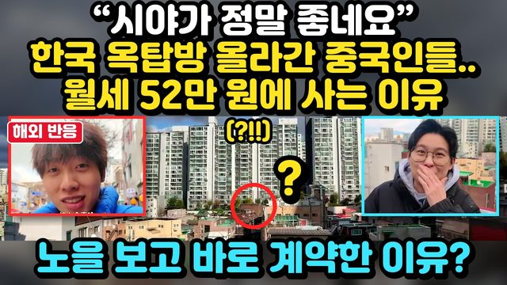
/run/media/yh/새 볼륨/_국뽕영상결과물/EP02_옥탑방/썸네일_V3/썸네일_V3.1_a_수정본.jpg
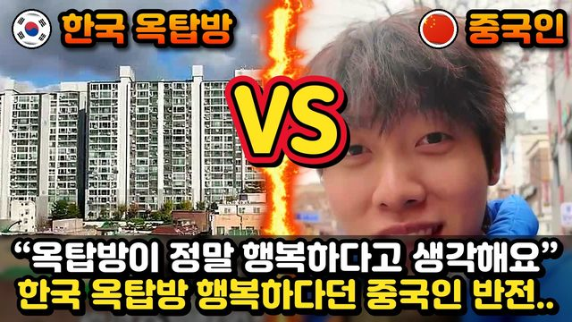
/run/media/yh/새 볼륨/_국뽕영상결과물/EP02_옥탑방/썸네일_V3/썸네일_V3.1_b_VS분할.jpg
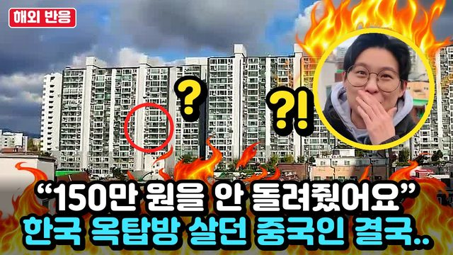
/run/media/yh/새 볼륨/_국뽕영상결과물/EP02_옥탑방/썸네일_V3/썸네일_V3.1_c_불꽃.jpg
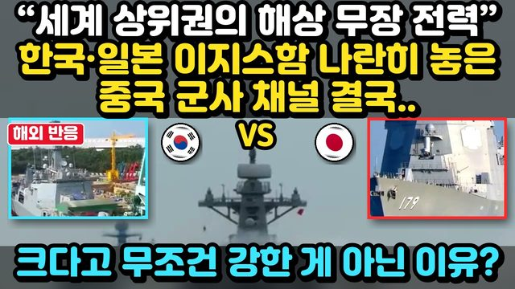
/run/media/yh/새 볼륨/_국뽕영상결과물/EP02_이지스구축함/썸네일_V3/썸네일_V3.1_a_수정본.jpg
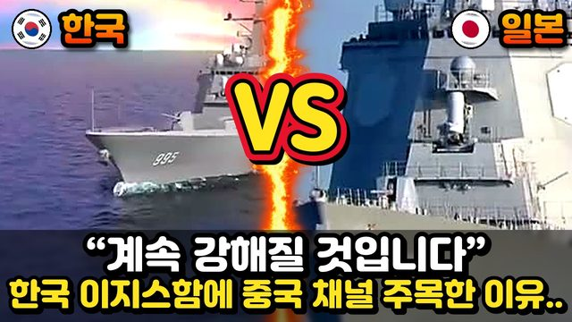
/run/media/yh/새 볼륨/_국뽕영상결과물/EP02_이지스구축함/썸네일_V3/썸네일_V3.1_b_VS분할.jpg
/run/media/yh/새 볼륨/_국뽕영상결과물/EP02_이지스구축함/썸네일_V3/썸네일_V3.1_c_불꽃.jpg
/run/media/yh/새 볼륨/_국뽕영상결과물/EP02_편의점100위안/썸네일_V3/썸네일_V3.1_a_수정본.jpg
/run/media/yh/새 볼륨/_국뽕영상결과물/EP02_편의점100위안/썸네일_V3/썸네일_V3.1_b_VS분할.jpg
/run/media/yh/새 볼륨/_국뽕영상결과물/EP02_편의점100위안/썸네일_V3/썸네일_V3.1_c_불꽃.jpg
/run/media/yh/새 볼륨/_국뽕영상결과물/EP03_HBM젠슨황/썸네일_V3/썸네일_V3.1_a_수정본.jpg
/run/media/yh/새 볼륨/_국뽕영상결과물/EP03_HBM젠슨황/썸네일_V3/썸네일_V3.1_b_VS분할.jpg
/run/media/yh/새 볼륨/_국뽕영상결과물/EP03_HBM젠슨황/썸네일_V3/썸네일_V3.1_c_불꽃.jpg
/run/media/yh/새 볼륨/_국뽕영상결과물/EP03_KTX청룡반전/썸네일_V3/썸네일_V3.1_a_수정본.jpg
/run/media/yh/새 볼륨/_국뽕영상결과물/EP03_KTX청룡반전/썸네일_V3/썸네일_V3.1_b_VS분할.jpg
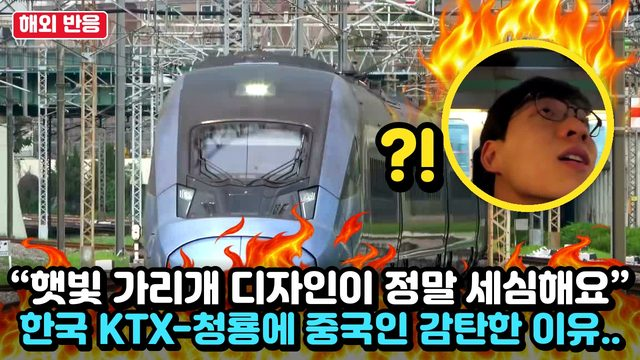
/run/media/yh/새 볼륨/_국뽕영상결과물/EP03_KTX청룡반전/썸네일_V3/썸네일_V3.1_c_불꽃.jpg
/run/media/yh/새 볼륨/_국뽕영상결과물/EP03_로고갈이논쟁/썸네일_V3/썸네일_V3.1_a_수정본.jpg
/run/media/yh/새 볼륨/_국뽕영상결과물/EP03_로고갈이논쟁/썸네일_V3/썸네일_V3.1_b_VS분할.jpg
/run/media/yh/새 볼륨/_국뽕영상결과물/EP03_로고갈이논쟁/썸네일_V3/썸네일_V3.1_c_불꽃.jpg
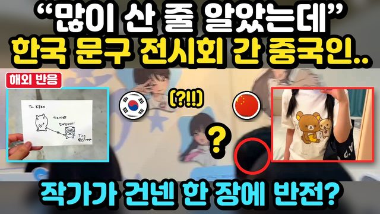
/run/media/yh/새 볼륨/_국뽕영상결과물/EP03_서울문구전시회/썸네일_V3/썸네일_V3.1_a_수정본.jpg
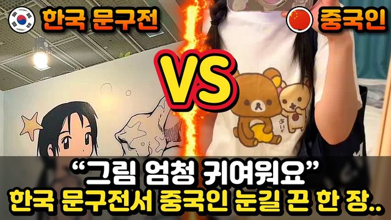
/run/media/yh/새 볼륨/_국뽕영상결과물/EP03_서울문구전시회/썸네일_V3/썸네일_V3.1_b_VS분할.jpg
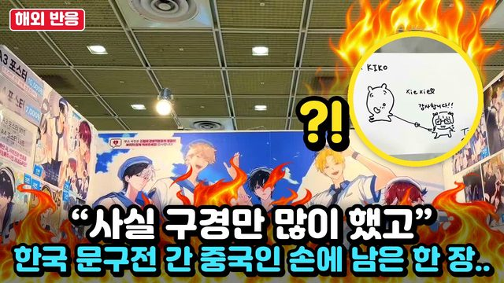
/run/media/yh/새 볼륨/_국뽕영상결과물/EP03_서울문구전시회/썸네일_V3/썸네일_V3.1_c_불꽃.jpg
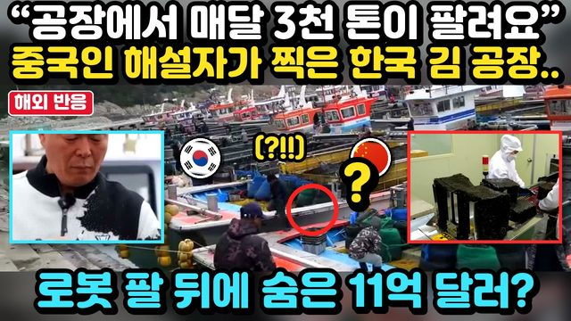
/run/media/yh/새 볼륨/_국뽕영상결과물/EP04_김공장/썸네일_V3/썸네일_V3.1_a_수정본.jpg
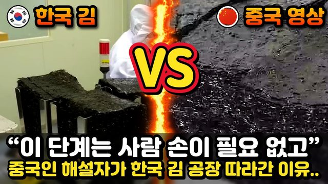
/run/media/yh/새 볼륨/_국뽕영상결과물/EP04_김공장/썸네일_V3/썸네일_V3.1_b_VS분할.jpg
/run/media/yh/새 볼륨/_국뽕영상결과물/EP04_김공장/썸네일_V3/썸네일_V3.1_c_불꽃.jpg
/run/media/yh/새 볼륨/_국뽕영상결과물/EP04_미해군한국조선/썸네일_V3/썸네일_V3.1_a_수정본.jpg
/run/media/yh/새 볼륨/_국뽕영상결과물/EP04_미해군한국조선/썸네일_V3/썸네일_V3.1_b_VS분할.jpg
/run/media/yh/새 볼륨/_국뽕영상결과물/EP04_미해군한국조선/썸네일_V3/썸네일_V3.1_c_불꽃.jpg
/run/media/yh/새 볼륨/_국뽕영상결과물/EP05_시위를본중국여행자/썸네일_V3/썸네일_V3.1_a_수정본.jpg
/run/media/yh/새 볼륨/_국뽕영상결과물/EP05_시위를본중국여행자/썸네일_V3/썸네일_V3.1_b_VS분할.jpg
/run/media/yh/새 볼륨/_국뽕영상결과물/EP05_시위를본중국여행자/썸네일_V3/썸네일_V3.1_c_불꽃.jpg
/run/media/yh/새 볼륨/_국뽕영상결과물/EP05_자동차수출/썸네일_V3/썸네일_V3.1_a_수정본.jpg
/run/media/yh/새 볼륨/_국뽕영상결과물/EP05_자동차수출/썸네일_V3/썸네일_V3.1_b_VS분할.jpg
/run/media/yh/새 볼륨/_국뽕영상결과물/EP05_자동차수출/썸네일_V3/썸네일_V3.1_c_불꽃.jpg
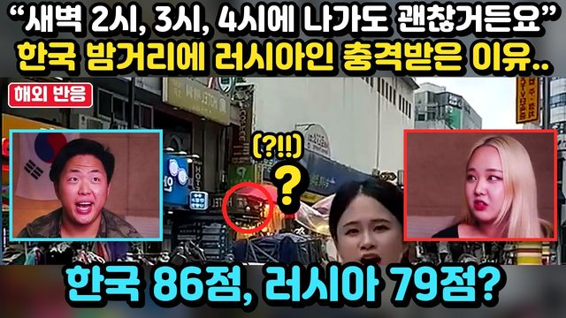
/run/media/yh/새 볼륨/_국뽕영상결과물/EP06/썸네일_V3/썸네일_V3.1_a_수정본.jpg
/run/media/yh/새 볼륨/_국뽕영상결과물/EP06/썸네일_V3/썸네일_V3.1_b_VS분할.jpg
/run/media/yh/새 볼륨/_국뽕영상결과물/EP06/썸네일_V3/썸네일_V3.1_c_불꽃.jpg
/run/media/yh/새 볼륨/_국뽕영상결과물/EP06_카드지갑유학생/썸네일_V3/썸네일_V3.1_a_수정본.jpg
/run/media/yh/새 볼륨/_국뽕영상결과물/EP06_카드지갑유학생/썸네일_V3/썸네일_V3.1_b_VS분할.jpg
/run/media/yh/새 볼륨/_국뽕영상결과물/EP06_카드지갑유학생/썸네일_V3/썸네일_V3.1_c_불꽃.jpg
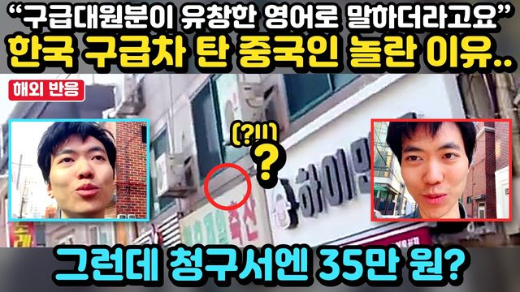
/run/media/yh/새 볼륨/_국뽕영상결과물/EP07_구급차영어한마디/썸네일_V3/썸네일_V3.1_a_수정본.jpg
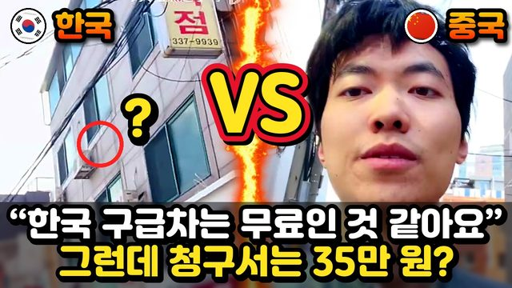
/run/media/yh/새 볼륨/_국뽕영상결과물/EP07_구급차영어한마디/썸네일_V3/썸네일_V3.1_b_VS분할.jpg
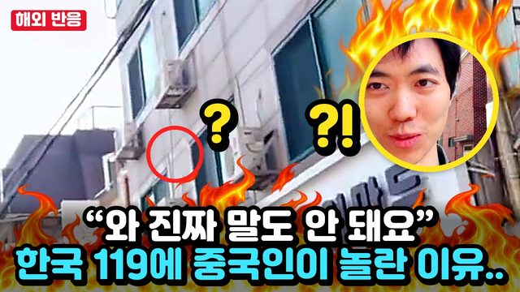
/run/media/yh/새 볼륨/_국뽕영상결과물/EP07_구급차영어한마디/썸네일_V3/썸네일_V3.1_c_불꽃.jpg
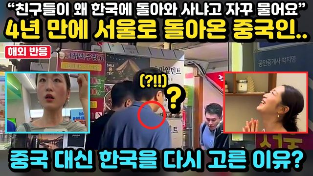
/run/media/yh/새 볼륨/_국뽕영상결과물/EP07_서울재이주/썸네일_V3/썸네일_V3.1_a_수정본.jpg
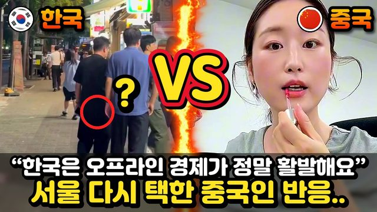
/run/media/yh/새 볼륨/_국뽕영상결과물/EP07_서울재이주/썸네일_V3/썸네일_V3.1_b_VS분할.jpg
/run/media/yh/새 볼륨/_국뽕영상결과물/EP07_서울재이주/썸네일_V3/썸네일_V3.1_c_불꽃.jpg
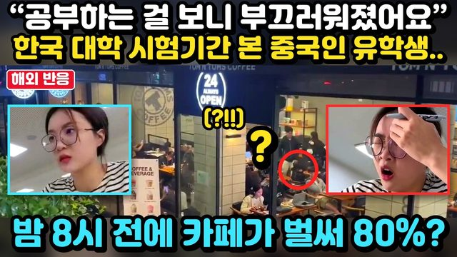
/run/media/yh/새 볼륨/_국뽕영상결과물/EP08_시험기간유학생/썸네일_V3/썸네일_V3.1_a_수정본.jpg
/run/media/yh/새 볼륨/_국뽕영상결과물/EP08_시험기간유학생/썸네일_V3/썸네일_V3.1_b_VS분할.jpg
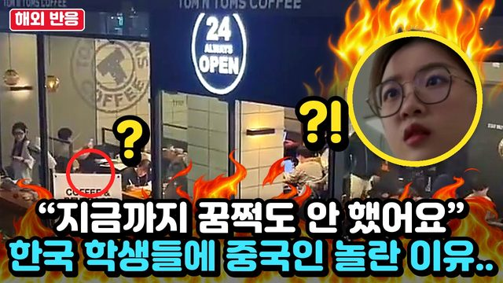
/run/media/yh/새 볼륨/_국뽕영상결과물/EP08_시험기간유학생/썸네일_V3/썸네일_V3.1_c_불꽃.jpg
/run/media/yh/새 볼륨/_국뽕영상결과물/EP09_야식먹방/썸네일_V3/썸네일_V3.1_a_수정본.jpg
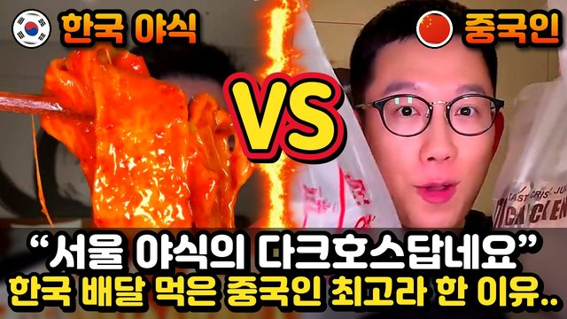
/run/media/yh/새 볼륨/_국뽕영상결과물/EP09_야식먹방/썸네일_V3/썸네일_V3.1_b_VS분할.jpg
/run/media/yh/새 볼륨/_국뽕영상결과물/EP09_야식먹방/썸네일_V3/썸네일_V3.1_c_불꽃.jpg
/run/media/yh/새 볼륨/_국뽕영상결과물/EP09_해녀/썸네일_V3/썸네일_V3.1_a_수정본.jpg
/run/media/yh/새 볼륨/_국뽕영상결과물/EP09_해녀/썸네일_V3/썸네일_V3.1_b_VS분할.jpg
/run/media/yh/새 볼륨/_국뽕영상결과물/EP09_해녀/썸네일_V3/썸네일_V3.1_c_불꽃.jpg
/run/media/yh/새 볼륨/_국뽕영상결과물/EP10_린단감사/썸네일_V3/썸네일_V3.1_a_수정본.jpg
/run/media/yh/새 볼륨/_국뽕영상결과물/EP10_린단감사/썸네일_V3/썸네일_V3.1_b_VS분할.jpg
/run/media/yh/새 볼륨/_국뽕영상결과물/EP10_린단감사/썸네일_V3/썸네일_V3.1_c_불꽃.jpg
/run/media/yh/새 볼륨/_국뽕영상결과물/EP10_서울라이더/썸네일_V3/썸네일_V3.1_a_수정본.jpg
/run/media/yh/새 볼륨/_국뽕영상결과물/EP10_서울라이더/썸네일_V3/썸네일_V3.1_b_VS분할.jpg
/run/media/yh/새 볼륨/_국뽕영상결과물/EP10_서울라이더/썸네일_V3/썸네일_V3.1_c_불꽃.jpg
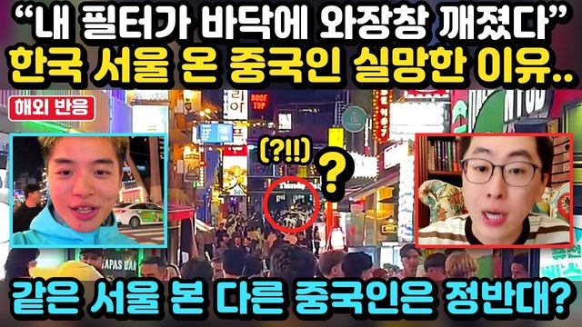
/run/media/yh/새 볼륨/_국뽕영상결과물/EP11_한국형편없는나라/썸네일_V3/썸네일_V3.1_a_수정본.jpg
/run/media/yh/새 볼륨/_국뽕영상결과물/EP11_한국형편없는나라/썸네일_V3/썸네일_V3.1_b_VS분할.jpg
/run/media/yh/새 볼륨/_국뽕영상결과물/EP11_한국형편없는나라/썸네일_V3/썸네일_V3.1_c_불꽃.jpg
/run/media/yh/새 볼륨/_국뽕영상결과물/EP12_시험기간유학생/썸네일_V3/썸네일_V3.1_a_수정본.jpg
/run/media/yh/새 볼륨/_국뽕영상결과물/EP12_시험기간유학생/썸네일_V3/썸네일_V3.1_b_VS분할.jpg
/run/media/yh/새 볼륨/_국뽕영상결과물/EP12_시험기간유학생/썸네일_V3/썸네일_V3.1_c_불꽃.jpg
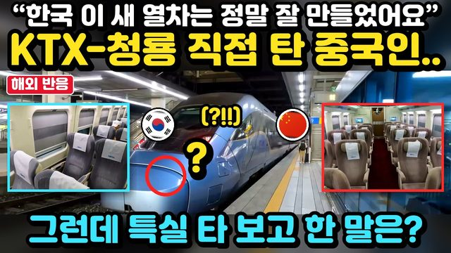
/run/media/yh/새 볼륨/_국뽕영상결과물/EP_KTX청룡/썸네일_V3/썸네일_V3.1_a_수정본.jpg
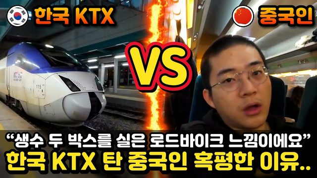
/run/media/yh/새 볼륨/_국뽕영상결과물/EP_KTX청룡/썸네일_V3/썸네일_V3.1_b_VS분할.jpg
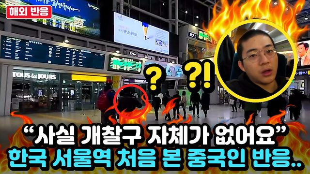
/run/media/yh/새 볼륨/_국뽕영상결과물/EP_KTX청룡/썸네일_V3/썸네일_V3.1_c_불꽃.jpg
/run/media/yh/새 볼륨/_국뽕영상결과물/EP_K뷰티여행/썸네일_V3/썸네일_V3.1_a_수정본.jpg
/run/media/yh/새 볼륨/_국뽕영상결과물/EP_K뷰티여행/썸네일_V3/썸네일_V3.1_b_VS분할.jpg
/run/media/yh/새 볼륨/_국뽕영상결과물/EP_K뷰티여행/썸네일_V3/썸네일_V3.1_c_불꽃.jpg
/run/media/yh/새 볼륨/_국뽕영상결과물/EP_뷰티파마/썸네일_V3/썸네일_V3.1_a_수정본.jpg
/run/media/yh/새 볼륨/_국뽕영상결과물/EP_뷰티파마/썸네일_V3/썸네일_V3.1_b_VS분할.jpg
/run/media/yh/새 볼륨/_국뽕영상결과물/EP_뷰티파마/썸네일_V3/썸네일_V3.1_c_불꽃.jpg
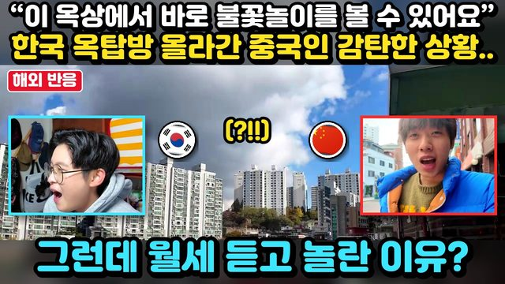
/run/media/yh/새 볼륨/_국뽕영상결과물/NEW03_옥탑방/썸네일_V3/썸네일_V3.1_a_수정본.jpg
/run/media/yh/새 볼륨/_국뽕영상결과물/NEW03_옥탑방/썸네일_V3/썸네일_V3.1_b_VS분할.jpg
/run/media/yh/새 볼륨/_국뽕영상결과물/NEW03_옥탑방/썸네일_V3/썸네일_V3.1_c_불꽃.jpg
/run/media/yh/새 볼륨/_국뽕영상결과물/NEW04_카드지갑결제/썸네일_V3/썸네일_V3.1_a_수정본.jpg
/run/media/yh/새 볼륨/_국뽕영상결과물/NEW04_카드지갑결제/썸네일_V3/썸네일_V3.1_b_VS분할.jpg
/run/media/yh/새 볼륨/_국뽕영상결과물/NEW04_카드지갑결제/썸네일_V3/썸네일_V3.1_c_불꽃.jpg
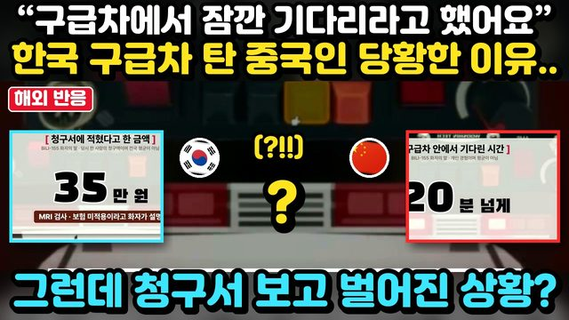
/run/media/yh/새 볼륨/_국뽕영상결과물/NEW05_구급차응급이송/썸네일_V3/썸네일_V3.1_a_수정본.jpg
/run/media/yh/새 볼륨/_국뽕영상결과물/NEW05_구급차응급이송/썸네일_V3/썸네일_V3.1_b_VS분할.jpg
/run/media/yh/새 볼륨/_국뽕영상결과물/NEW05_구급차응급이송/썸네일_V3/썸네일_V3.1_c_불꽃.jpg
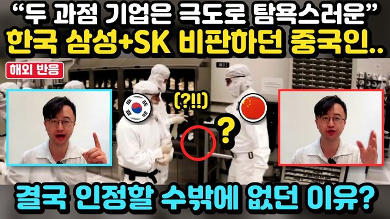
/run/media/yh/새 볼륨/_국뽕영상결과물/NEW06_중국메모리반도체/썸네일_V3/썸네일_V3.1_a_수정본.jpg
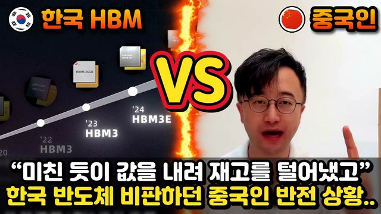
/run/media/yh/새 볼륨/_국뽕영상결과물/NEW06_중국메모리반도체/썸네일_V3/썸네일_V3.1_b_VS분할.jpg
/run/media/yh/새 볼륨/_국뽕영상결과물/NEW06_중국메모리반도체/썸네일_V3/썸네일_V3.1_c_불꽃.jpg
/run/media/yh/새 볼륨/_국뽕영상결과물/NEW07_제주겨울여행/썸네일_V3/썸네일_V3.1_a_수정본.jpg
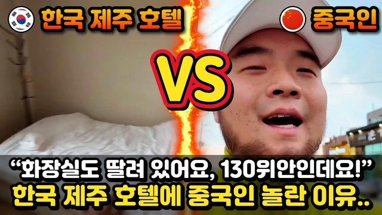
/run/media/yh/새 볼륨/_국뽕영상결과물/NEW07_제주겨울여행/썸네일_V3/썸네일_V3.1_b_VS분할.jpg
/run/media/yh/새 볼륨/_국뽕영상결과물/NEW07_제주겨울여행/썸네일_V3/썸네일_V3.1_c_불꽃.jpg
/run/media/yh/새 볼륨/_국뽕영상결과물/V5_EP03_애플폴더블/썸네일_V3/썸네일_V3.1_a_수정본.jpg
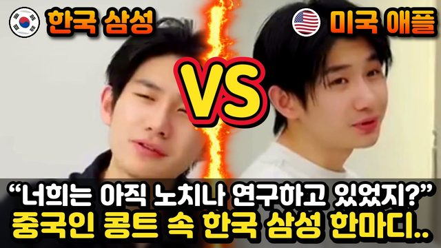
/run/media/yh/새 볼륨/_국뽕영상결과물/V5_EP03_애플폴더블/썸네일_V3/썸네일_V3.1_b_VS분할.jpg
/run/media/yh/새 볼륨/_국뽕영상결과물/V5_EP03_애플폴더블/썸네일_V3/썸네일_V3.1_c_불꽃.jpg
/run/media/yh/새 볼륨/_국뽕영상결과물/V5_EP04_조선끝났다/썸네일_V3/썸네일_V3.1_a_수정본.jpg
/run/media/yh/새 볼륨/_국뽕영상결과물/V5_EP04_조선끝났다/썸네일_V3/썸네일_V3.1_b_VS분할.jpg
/run/media/yh/새 볼륨/_국뽕영상결과물/V5_EP04_조선끝났다/썸네일_V3/썸네일_V3.1_c_불꽃.jpg
/run/media/yh/새 볼륨/_국뽕영상결과물/V5_EP05_아이오닉V/썸네일_V3/썸네일_V3.1_a_수정본.jpg
/run/media/yh/새 볼륨/_국뽕영상결과물/V5_EP05_아이오닉V/썸네일_V3/썸네일_V3.1_b_VS분할.jpg
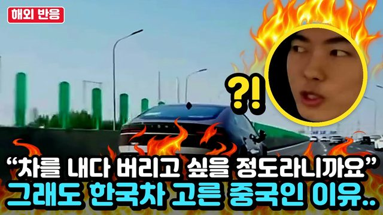
/run/media/yh/새 볼륨/_국뽕영상결과물/V5_EP05_아이오닉V/썸네일_V3/썸네일_V3.1_c_불꽃.jpg
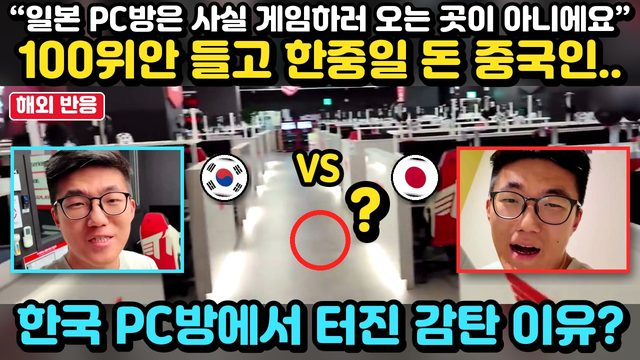
/run/media/yh/새 볼륨/_국뽕영상결과물/한일비교51-99_V8/51_썸네일_V3/썸네일_V3.1_a_수정본.jpg
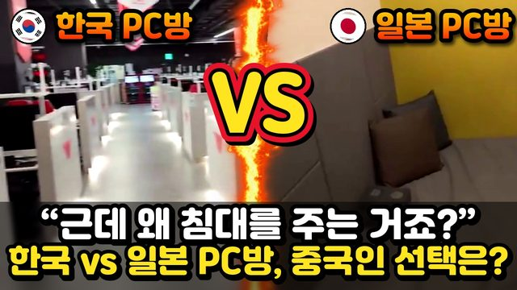
/run/media/yh/새 볼륨/_국뽕영상결과물/한일비교51-99_V8/51_썸네일_V3/썸네일_V3.1_b_VS분할.jpg
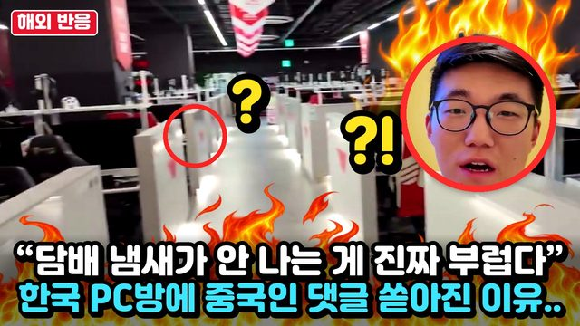
/run/media/yh/새 볼륨/_국뽕영상결과물/한일비교51-99_V8/51_썸네일_V3/썸네일_V3.1_c_불꽃.jpg
/run/media/yh/새 볼륨/_국뽕영상결과물/한일비교51-99_V8/52_썸네일_V3/썸네일_V3.1_a_수정본.jpg
/run/media/yh/새 볼륨/_국뽕영상결과물/한일비교51-99_V8/52_썸네일_V3/썸네일_V3.1_b_VS분할.jpg
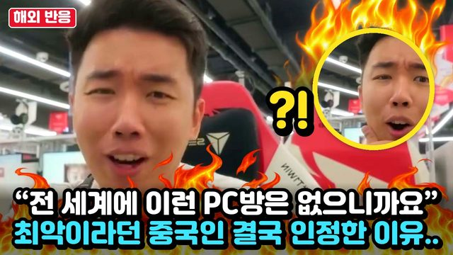
/run/media/yh/새 볼륨/_국뽕영상결과물/한일비교51-99_V8/52_썸네일_V3/썸네일_V3.1_c_불꽃.jpg
/run/media/yh/새 볼륨/_국뽕영상결과물/한일비교51-99_V8/53_썸네일_V3/썸네일_V3.1_a_수정본.jpg
/run/media/yh/새 볼륨/_국뽕영상결과물/한일비교51-99_V8/53_썸네일_V3/썸네일_V3.1_b_VS분할.jpg
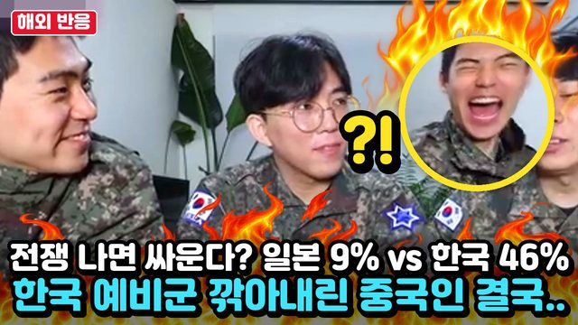
/run/media/yh/새 볼륨/_국뽕영상결과물/한일비교51-99_V8/53_썸네일_V3/썸네일_V3.1_c_불꽃.jpg
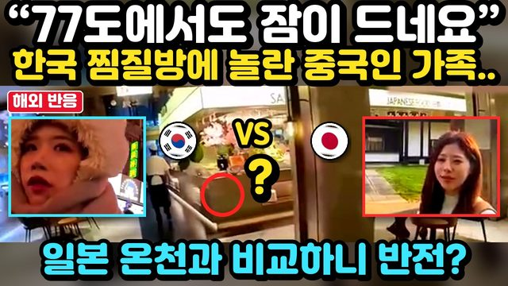
/run/media/yh/새 볼륨/_국뽕영상결과물/한일비교51-99_V8/54_썸네일_V3/썸네일_V3.1_a_수정본.jpg
/run/media/yh/새 볼륨/_국뽕영상결과물/한일비교51-99_V8/54_썸네일_V3/썸네일_V3.1_b_VS분할.jpg
/run/media/yh/새 볼륨/_국뽕영상결과물/한일비교51-99_V8/54_썸네일_V3/썸네일_V3.1_c_불꽃.jpg